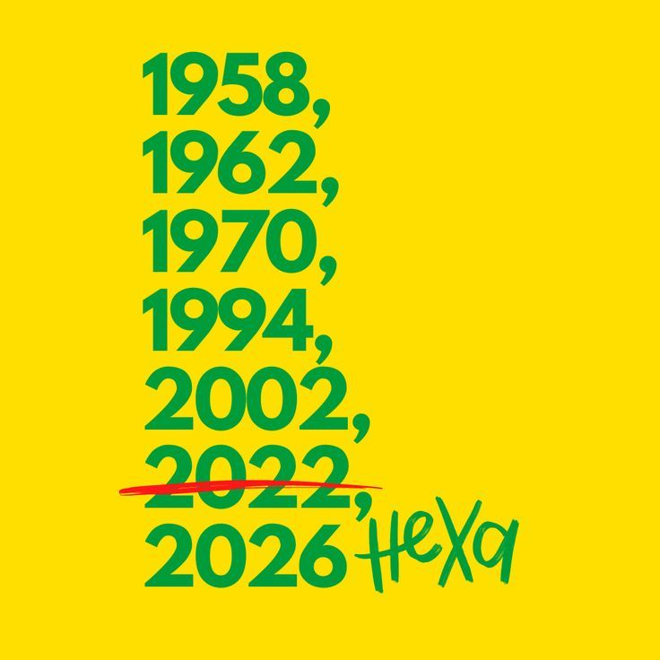

Uma história construída por gerações de craques, marcada por conquistas, talento e paixão. Conheça os momentos que transformaram a Seleção Brasileira na maior campeã da história das Copas do Mundo.
← Voltar ao Portal
Na Suécia, a Seleção Brasileira conquistou sua primeira Copa do Mundo e apresentou ao planeta um futebol técnico, criativo e ofensivo. O título marcou o início de uma trajetória que mudaria para sempre a história do esporte.
No Chile, o Brasil voltou a levantar a taça e conquistou o bicampeonato mundial. A vitória consolidou uma geração histórica e mostrou ao mundo que o sucesso de 1958 era apenas o começo.
No México, uma das maiores equipes já vistas encantou o planeta. Com talento, criatividade e domínio técnico, o Brasil conquistou o tricampeonato e eternizou o chamado futebol arte.
Após vinte e quatro anos de espera, a Seleção voltou a conquistar o mundo. A campanha nos Estados Unidos foi marcada por organização, disciplina e determinação para devolver o Brasil ao lugar mais alto do futebol mundial.
Na Coreia do Sul e no Japão, o Brasil realizou uma campanha memorável e conquistou o pentacampeonato. A vitória consolidou o país como o maior vencedor da história das Copas do Mundo.
Cinco estrelas representam décadas de dedicação, talento e conquistas. Agora, uma nova geração carrega a responsabilidade de defender a tradição da camisa mais vitoriosa do futebol mundial e buscar a tão sonhada sexta estrela.